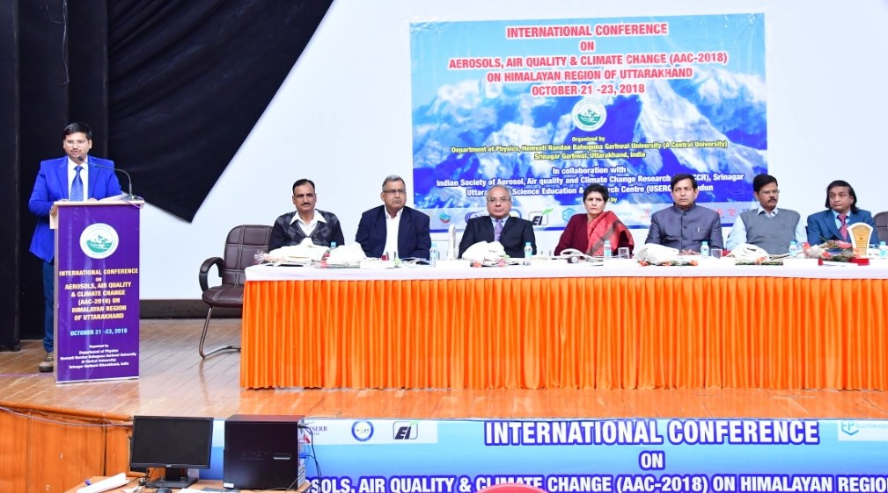

AAC-2022
2nd International Conference on Aerosols, Air Quality, and Climate Change (AAC-2022) over Himalayan region of Uttarakhand

Atmospheric aerosols are the solid and liquid particles suspended in the air. Most of these aerosol particles are produced by natural (wind-borne dust, sea spray, volcanic debris, biogenic aerosols) as well as anthropogenic (industrial emission, agricultural activities, fossil fuel combustion, waste and biomass burning) sources. Aerosols have a significant impact on regional to global climate and contribute to the change in air quality, cloud formation mechanism, atmospheric chemistry, greenhouse effect, and the Earth’s radiation budget. Aerosols can also affect human health by causing chronic respiratory diseases and asthma. During the last few decades, the anthropogenic emissions of aerosols have been increased significantly due to vehicular emission, urbanization and industrialization. Several national and international studies have reported the increased amount of air pollution over the Indo Gangetic Plain (IGP) regions and Brahmaputra valley regions of India. During winters, the whole northern part of India is facing heavy smog every year. It is caused by various factors including stubble burning, industrialization and vehicular emission in nearby regions and states. Recently, according to a World Health Organization survey, the air quality of Delhi is the worst of any major city in the world. Transportation of the atmospheric pollutants over the high altitude locations of the Himalayas with air masses from the southwest direction was also reported during the pre-monsoon and winter seasons. Which reaches all the way up to Nepal and Tibet through the valley regions? Affects the weather and climate conditions over the sensitive regions of the Himalaya. Apart from these increasing tourism activities, urbanization and events of forest fire majorly contribute as the local emission sources of aerosols in Uttarakhand.
In view of the above challenges, the Hemvati Nandan Bahuguna Garhwal University (HNBGU) Srinagar - Pauri Garhwal, Uttarakhand is going to organize an International conference on "Aerosols, Air Quality, and Climate Change (AAC-2022) on Himalayan Region of Uttarakhand " in the Department of Physics, School of Science, HNBGU, Srinagar (Garhwal), India on 15-17 October 2022 for mitigating it through after interaction and adoption new techniques.
The main objectives of the conference the above mentioned conference are:
(i) Discussion on the categorization of possible aerosol sources, their characteristics and their impact on the weather and climatic conditions.
(ii) Discussion on the possible new active monitoring techniques, and innovative use of existing instrumentation to study new or established issues in aerosol science.
(iii) Development of a regulatory framework to study atmospheric aerosols and its climatic impact over the Himalayan region with the collaboration of different institutes and agencies gathered in the conference.
(iv) Discussion on the possible approach to develop the legislation and policy for air pollution control and mitigation with the involvement of government and responsible authorities.
In this conference, the total participant will be more than 500 including thirty from HNBGU, Srinagar and around fifty from National research organizations and universities (IITs, IISER, IITM, PRL, NPL, IMD, Bose Institute, JNU, BHU, and Indian Universities). Only key note speaker names are required.
THE UNIVERSITY
Established under the U.P. State Universities Act (1973), then named as Garhwal University was founded in December 1973. It was rechristened in 1989 as Hemvati Nandan Bahuguna Garhwal University. Today this University is amongst the ten largest University of the country with 3 campuses and more than 180 affiliating colleges and institutes (both state run and self-financed). Since its inception, despite the limited resources and various geographical constraints, the University has charted a course of growth and development, to gain recognition as one of the better universities in India. As a mark of appreciation for its academic achievements, HNB Garhwal University was upgraded as a Central University under the Central Universities Act, 2009. The University is located at Srinagar (105 kms from Rishikesh) on the banks of river Alaknanda, one of the major tributaries of river Ganga. The serene environment presents a near perfect setting for intellectual pursuits.
DEPARTMENT OF PHYSICS
Physics department was established in the year 1962 as one of the Science departments of Birla Government Degree College, Srinagar (Garhwal). This was upgraded to Post Graduate level in the year 1972. The department in Pauri and Tehri campus was established in 1972 and 1973 respectively with an undergraduate course in Physics. In 1992 post-graduate course was started with specialization in electronics at Pauri campus whereas it was started at Tehri campus in 1990. University took over the department of Physics as Centre for under graduate, Post graduate teaching and research activities in Physics. Research in Solid state Physics, Mathematical Physics and Spectroscopy began with the establishment of Garhwal University. The Department has been identified under DST-FIST programme for strengthening the research facilities and established a Computer Lab. Various research schemes under DST, UGC, MNES, UCOST etc. have been completed in the Department.
Faculty members of the department are actively engaged in research in the different fields namely (a) Condensed Matter Physics/Materials Science Experimental Studies preparation, characterization and measurements ferroelectric systems/Poly crystals, ultrasonic investigations of Polymers and liquids; Theoretical studies of dielectric and ferroelectric properties of crystals; Theoretical studies of high temperature superconductors; theoretical studies of thermal properties of ferroelectrics, (b) Fluorescence spectroscopy- energy transfer, Solar Photothermal and Photovoltaic devices, (c) Nuclear and Particle Physics/Astroparticle Physics- Theoretical studies of monopoles, Gauge theory, Supersymmetry and cosmology etc. and (d) Mathematical Physics- Theoretical studies and Simulation techniques (e) Atmospheric Physics and Space Science. The department is well equipped for research work with instruments like Fluorescence Spectro Photometer (Perkin Elmer), UV and Visible Spectroscope (Perkin Elmer), Ultrasonic interferometer, High Temperature Furnace, Mossbauer Effect, Sulphur dioxide analyser, Automatic weather station and Gamma ray spectrometer.
ABOUT THE CONFERENCE
The conference will offer three days of plenary lectures, contributed papers in the form of platform and poster presentations and exhibition of different products and systems related to aerosol science and technology and allied areas.
SCOPE OF THE CONFERENCE
The conference will focus on the latest developments in air quality and aerosol science as well as the insights that the community has gained in recent years with regard to the impacts of aerosols on human health and climate change, including the following broad areas:
► Advancement in Basic, Applied Sciences, Engineering, Social Sciences & Humanities (Multidisplinary - All Streams)
Sub topics: (i) Nuclear, Radioactive aerosols, Nano-aerosols and Material Synthesis (ii)Basic scientific research (ii) Fundamental, investigative research, theoretical or experimental, to advance knowledge without a specifically envisaged practical applications (iii) Critically thinking about issues confronting them and develop solutions that are informed not only by math, science and engineering, but by humanities and social sciences as well; to implement those solutions effectively within real social contexts; and to evaluate them in humanistic as well as technical terms. (iv) Problem-solving, innovation and development of products and processes.
► Physical and chemical characteristics of atmospheric aerosols
Sub topics: (i) Physical, chemical, and optical properties of ambient aerosols and its impacts on the ecosystem, human health and climate change; (ii) Formation and growth of particles from nanometer to micrometer dimensions in size, aging mechanism, classification and measurement of transport and deposition properties; (iii) Time-resolved investigations of the complex multiphase system and aerosol modeling; (iv) Study of life cycle of atmospheric aerosol particles, aerosol dynamics, nucleation and growth, aerosol filtration, interactions between aerosols and surfaces, agglomeration and fragmentation; (v) Aerosol-cloud interactions in-situ and laboratory measurements; (vi) Overview of the aerosol study in the Himalayan region Uttarakhand; (vii) Columnar optical depth and near-surface mass concentration of aerosols; (viii) Regional and global transport models and numerical modeling of basic aerosol processes; (ix) Roles of aerosols in cloud formation and radiative balance of Earth
► Optical and Radiative Characterization of atmospheric Aerosols
Sub topics: (i) Columnar optical depth and near-surface mass concentration of aerosols (ii) Role of air mass trajectories on aerosols
► Study of aerosols by various Remote Sensing Techniques
Sub topics: (i) Remote sensing via satellite, surface and airborne instrumentation measurements of aerosol (ii) Spatial and temporal coverage for validation of numerical models of aerosol production, dispersion and deposition (iii) Testing the fidelity of air quality, weather and climate models and (iv) Possibilities of the research through Aerosol remote sensing in Himalayan region Uttarakhand
► Impact of Aerosol on human Health
Sub topics: (i) Role of pollution in the air borne deceases i.e. asthma increase. (ii) Link between asthma and pollution (iii) Role play by the aerosols from the role play by the precursor gases near the traffic source.
► Impact of aerosol on Agriculture
Sub topics: (i) Emission of primary pollutants as sulphur dioxide, nitrogen oxide and particulates into the atmosphere. (ii) Effect of primary pollutants in urban areas close to the large point sources. (iii) Secondary pollutants include tropospheric (ground level) ozone, by subsequent chemical reactions in the atmosphere (iv) The reactions leading to ozone formation from primary pollutants by high temperature and light intensities.
► Impact of aerosols on climate over Himalayan region Sub topics: (i) Observations i.e. Moderate Resolution Imaging Spectroradiometer, Cloud-Aerosol Lidar with Orthogonal Polarization etc (iii) Biomass burning and BC/OC emission (iii) Aerosol radiative forcing during biomass burning period ( iv) its implications to Himalayan glaciers
► Aerosol System over High-Altitude Himalayas from observations and modeling and their possible effects of glaciers and radiation budget.
Sub topics: (i) Aerosol abundance over High altitudes Himalayas (ii) The large spatial and temporal heterogeneity of the aerosol properties and climate-impact assessment of aerosols (iii) Regional trends and discussion on the potential climate implications
► Role of Aerosols on Water-Energy Resources and Development of Hydropower in Uttarakhand
Sub topics: (i) Water Resources overview; (ii) Regional issues, potentials, availability, utilization & development of hydropower; (iii) Springs, glaciers, snow melting and water budgeting; (iv) Water management: rain water harvesting, water pollution, conservation, planning & polices; (v) Hydropower potential in Uttarakhand-opportunities & challenges.
Chief Patron
Prof. Shri Prakash Singh
Hon'ble Vice Chancellor, HNBGU Srinagar Garhwal
Patron
Prof. Rakesh Kumar Dhodi
Registrar, HNBGU Srinagar Garhwal
Co‑Patron(s)
Prof. P. D. Semalty, Dean, School of Sciences, HNBGU
Prof. M.M.S. Rauthan, Dean, School of Engineering and Technology, HNBGU
Prof. Sunita Godiyal, Dean, School of Education, Department of Education, HNBGU
Prof. H.B.S. Chauhan, Dean, S.H. & S.S., Department of Anthropology, HNBGU
Prof. Manjula Rana, Dean, School of Arts, Communication & Language, HNBGU
Prof. H.C. Nainwal, Dean, School of Earth Science, HNBGU
Prof. Ajit Kumar Negi, Dean, School of Agriculture and Allied Science, HNBGU
Prof. N. K. Agarwal, Dean, School of Life Sciences, HNBGU
Prof. R.K. Dhodi, Dean, School of Management, HNBGU
Prof. Subodh Kumar Sharma, Dean, School of Commerce, HNBGU
Dr. Mamta Rana, Dean, School of Law, HNBGU
Convener(s) & Head of the Department
Prof. R. C. Ramola, Department of Physics, HNBGU Srinagar
Prof. D.S. Chauhan, Head, Department of Forestry and Natural Resources, HNBGU
Dr. Vijay Kant Purohit, Director, High Altitude Plant Physiology Research Center, HNBGU
Prof. R.S. Negi, Head, Department of Rural Technology, HNBGU
Prof. J.S. Chauhan, Head, Department of Seed Science & Technology, HNBGU
Prof. Veena Joshi, Head, Department of Chemistry, HNBGU
Prof. Jyoti Tiwari, Head, Department of Home Science, HNBGU
Prof. Rajesh Dangwal, Head, Department of Mathematics, HNBGU
Prof. Ajay Gajanan Namdeo, Head, Department of Pharmaceutical Science, HNBGU
Prof. Subodh Kumar Sharma, Head, Department of Commerce, HNBGU
Prof. R.C.S. Kunwar, Head, Department of Defence, Strategic and Geopolitical Studies, HNBGU
Prof. M.P.S. Bisht, Head, Department of Geology, HNBGU
Prof. N.S. Panwar, Head, Department of Instrumentation Engineering, HNBGU
Prof. Kusum Dobriyal, Head, Department of Sanskrit, HNBGU
Prof. H.B.S. Chauhan, Head, Department of Anthropology, HNBGU
Prof. M.C. Sati, Head, Department of Economics, HNBGU
Prof. Yogambar Singh Farswan, Head, Department of History including & (AIHC), HNBGU
Prof. Himanshu Bourai, Head, Department of Political Science, HNBGU
Prof. Manju Khanduri Pandey, Head, Department of Psychology, HNBGU
Prof. Guddi Bisht, Head, Department of Hindi and Modern Indian Languages, HNBGU
Prof. Monika Gupta, Head, Department of English, HNBGU
Prof. Dhan Singh Bisht, Head, Department of Drawing and Painting, HNBGU
Prof. Shakuntala Kunwar, Head, Department of English, HNBGU
Prof. Geetali Padiyar, Head, Department of Sociology and Social Work, HNBGU
Prof. Natanamurugaraj Govindan, Head, Department of Botany and Microbiology, HNBGU
Prof. O. P. Gusain, Head (Birla Campus), Department of Zoology, HNBGU
Dr. R.K. Maikhuri, Head, Department of Environmental Science, HNBGU
Prof. M.S. Bisht, Head, Department of Zoology, HNBGU
Prof. G.K. Joshi, Head, Department of Biotechnology, HNBGU
Prof. Mahendra Babu Kuruva, Head, Department of Business Management, HNBGU
Prof. R.K. Dhodi, Head, Center for Mountain Tourism and Hospitality Studies, HNBGU
Prof. R.C. Dimri, Head (Birla Campus), Department of Mathematics, HNBGU
Prof. Rama Maikhuri, Head, Department of Education (Birla Campus), HNBGU
Prof. Kamala Chauhan, Head (Srinagar Campus), Department of Sanskrit, HNBGU
Prof. S.C. Sati, Head (Birla Campus), Department of Chemistry, HNBGU
Prof. M.C. Purohit, Head (BGR Campus), Department of Chemistry, HNBGU
Prof. J.P. Bhatt, Department of Sociology and Social Work, HNBGU
Prof. Chandra Kala R Kondi, Head, Department of Sahitya, Central Sanskrit University, Devprayag
Co‑Conveners
Prof. T. C. Upadhyay, Department of Physics, HNBGU
Prof. Hemvati Nandan, Head, Department of Physics, Birla Campus, HNBGU
Dr. K.N. Shah, Head, Department of Horticulture, HNBGU
Dr. Sarla Saklani, Head, Department of Pharmaceutical Chemistry, HNBGU
Prof. M.S. Panwar, Head, Department of Geography, HNBGU
Dr. Anuja Rawat, Head, Department of Naturopathy and Yoga, HNBGU
Dr. Mukul Pant, Head, Department of Physical Education, HNBGU
Dr. Brijesh Gangil, Head, Department of Mechanical Engineering, HNBGU
Mr. Arun Shekhar Bahuguna, Head, Department of E.C.E., HNBGU
Dr. Varun Barthwal, Head, Department of Information Technology, HNBGU
Dr. D.S. Bisht, Head, Department of Drawing and Painting, HNBGU
Dr. Sudhanshu Jayaswal, Head, Centre for Journalism and M.C., HNBGU
Dr. Ashok Kumar Pandey, Head, Department of Law, HNBGU
Dr. Manisha Nigam, Head, Department of Biochemistry, HNBGU
Dr. Jaspal Singh Chauhan, Head, Department of H. A. B., HNBGU
Dr. Lakhan Singh, Head (Birla Campus), Department of Statistics, HNBGU
Dr. Narendra Kumar Arya, Head (Tehri Campus), Department of Sanskrit, HNBGU
Dr. Ram Prakash, Head (BGR Campus Pauri), Department of Law, HNBGU
Dr. Gandhi Singh Chauhan, Head, Department of L.I.S., HNBGU
Dr. Kavita Bhatt, Head, Department of Philosophy, HNBGU
Dr. Kunwar Singh Rawat, Head (BGR Campus), Department of Mathematics, HNBGU
Dr. Sacchidanand Snehi, Head, Department of Darshan, C.S.U., Devprayag
Dr. S. P. Uniyal, Head, Dept. of Veda Karmakanda and Paurohitya, C.S.U., Devprayag
Dr. Brahmanand Mishra, Head, Department of Jyotish, C.S.U., Devprayag
Dr. Ganeshwar Nath Jha, Head, Department of Vyakarana, C.S.U., Devprayag
Dr. Dhanesh P V, Head, Department of Yogic Science, C.S.U., Devprayag
Coordinator
Dr. Alok Sagar Gautam, Department of Physics, HNBGU Srinagar
School Co‑ordinators
Dr. Charan Singh, Department of Pharmaceutical Sciences, HNBGU Srinagar
Dr. Vineet Kumar Maurya, Department of Microbiology, HNBGU Srinagar
Dr. Devendra Singh, Department of Education, HNBGU
Dr. Jitendra Singh Butola, Department of Forestry and Natural Resources, HNBGU
Dr. Hanumant K. Waghmare, Department of Sociology and Social Work, HNBGU
Dr. Vishvesh, Department of Sanskrit, HNBGU
Dr. Rahul Saini, Department of A.S. & H., School of Engineering & Technology, HNBGU
Dr. Narendra Kumar, Department of Geography, HNBGU
Dr. M. S. Sati, Department of Geology, HNBGU
Dr. Meenakshi, Department of Physics, Baba Mastnath University, Rohtak, Haryana
Dr. Parmjeet Kaur, Geeta University, Naultha, Panipat (Haryana)
Dr. Jai Shri Kumar, Department of Physics, F.L.T.M.S.B.P.G.G., Rewari, Haryana
Dr. Sonia, Department of Physics, Baba Mastnath University, Rohtak, Haryana
International & National Advisory Committee
Dr. M. Ravichandran, Secretary, Ministry of Earth Science (MOES), Government of India
Mr. Shri Tanmay Kumar, Secretary, (MoEFCC), Government of India
Shri Vivek Bhasin, Director, Bhabha Atomic Research Centre (BARC)
Dr. Amilcare Porporato, Duke University, USA
Dr. Marc L. Fischer, Lawrence Berkeley National Laboratory, USA
Dr. Jianmin Chen, University of Toronto, Canada
Dr. V. Narayan, Chairman, Department of Space & ISRO, Government of India
Dr. (Mrs.) N. Kalaiselvi, Director General, CSIR and Secretary DSIR
Prof. Abhay Karandikar, Secretary, Department of Science and Technology (DST)
Prof. Sandeep Verma, FNA, Secretary, SERB, DST, Government of India
Prof. Durgesh Pant, Director, UCOST, Government of Uttarakhand
Prof. Anita Rawat, Director, USERC, IST, Government of Uttarakhand
Dr. Manish K. Naja, Director, (ARIES), Nainital
Dr. V. Ramanathan, Scripps Institution of Oceanography, UC San Diego, USA
Dr. Spyros Pandis, Carnegie Mellon University, USA
Dr. Susanne Bauer, ETH Zurich, Switzerland
Dr. Greg Carmichael, University of Iowa, USA
Dr. Pratim Biswas, Washington University in St. Louis, USA
Prof. Thomas Wagner, Head, Satellite Remote Sensing, M.P.I. for Chemistry, Mainz
Dr. Steffen Berlee, Scientist, Max Planck Institute for Chemistry, Mainz
Dr. Rajan K. Chakrabarty, Department of EECE, Washington University
Dr. Philip K. Hopke, Bayard D. Clarkson Distinguished Professor Emeritus, Clarkson University
Dr. Maheswar Rupakheti, Institute for Advanced Sustainability Studies, Potsdam, Germany
Dr. Mrutyunjay Mohapatra, Director General of Meteorology, IMD, Government of India
Dr. Suryachandra A. Rao, Director, Indian Institute of Tropical Meteorology, Pune
Dr. Vineet Kumar Gahalaut, Director, Wadia Institute of Himalayan Geology, Dehradun
Dr. Amit Kumar Patra, Director, National Atmospheric Research Laboratory (NARL)
Prof. Sunil Kumar Singh, Director, National Institute of Oceanography (NIO), Goa
Dr. I.D. Bhatt, Director, G.B.P.N.I.H.E., Almora, Uttarakhand
Prof. Deepak Kumar Srivastava, Chairman, Indian Council of Social Science Research (ICSSR)
Prof. Srinivasa Varakhedi, Hon. Vice Chancellor, Central Sanskrit University, New Delhi
Prof. P V B Subrahmanyam, Director, Central Sanskrit University, Shri Raghunath Kirti Campus, Devprayag, Pauri Garhwal, Uttarakhand
Prof. (Dr.) V. K. Rastogi, (Retd. Professor), Department of Physics, CCS University, Meerut (UP)
Prof. (Dr.) Surendra Pratap Singh, Principal, Dr. B. R. Ambedkar G.D.C., Mainpuri (UP)
Prof. (Dr.) Dinesh Chandra, Principal, Government Degree College, Hempur, Bilsanda, Pilibhit (UP)
Prof. Jai Shanker, Principal, Govt Degree College Haripur, Nihastha, Raebareli (UP)
Dr. Ajay Kumar Saini, Principal, Govt. Degree College, Kuchlai, Sitapur (UP)
Dr. Asha Singh, Principal, Govt. Degree College, Tundla, Firozabad (UP)
Dr. Rita Rani, Department of Zoology, Feroze Gandhi College, Raebareli (UP)
Dr. Jay Prakash, Department of Physics, Kamla Nehru P.G. College, Tej Gaon, Raebareli (UP)
Dr. Ajay Pratap Singh, Department of Zoology, Dr. B.R. Ambedkar G.D.C., Mainpuri (UP)
Mr. Jay Prakash Yadav, Department of History, Dr. B.R. Ambedkar G.D.C., Mainpuri (UP)
Mr. Jagjivan Ram, Department of Chemistry, Dr. B.R. Ambedkar G.D.C., Mainpuri (UP)
Dr. Harendra Nath Sharma, Assistant Professor, Department of Zoology, S.V. College, Aligarh (UP)
Prof. Anil Kumar Chauhan, Principal, Municipal Post Graduate College, Mussoorie
Prof. Shalini Gupta, Dept. of Commerce, IQAC Coordinator, M.P.G. College, Mussoorie
Prof. K. C. Dutpudi, Principal, A.P.B. Govt. P.G. College, Agastyamuni, Rudraprayag, Uttarakhand
Advisory Committee
Dr. Jagvir Singh, Scientist, MES, Prithvi Bhavan, New Delhi
Dr. Akhilesh Kumar Mishra, NCMRWF, Ministry of Earth Sciences, Noida
Dr. (Mrs.) Anita Gupta, Head, CCP, Department of Science & Technology, Government of India
Dr. Samir V. Kamat, Chairman, Defence Research and Development Organisation (DRDO)
Shri Pradeep Gaur, Chairman and Director, Rail Vikas Nigam Limited (RVNIL)
Shri Ramesh Kumar Sudhanshu, Chairman (UKPCB), Dehradun, Uttarakhand
Dr. R.P. Singh, Director, Indian Institute of Remote Sensing (IIRS), Dehradun
Sh. Amandeep Garg, IAS, Chairman, Central Pollution Control Board (CPCB)
Dr. Ajit Kumar Mohanty, Chairman, Atomic Energy Commission
Shri Atul Kumar Singh, Chairman & CEO, Oil and Natural Gas Corporation Ltd. (ONGC)
Prof. Virendra K. Mishra, Dean & Head, IESD, Banaras Hindu University
Dr. A. K. Kamra, INSA, Senior Scientist, IITM Pune
Dr. Sandeep K., University of Strathclyde
Shri Naresh Pal Gangwar, Additional Secretary, Ministry of Environment, FCC
Mr. Bhupender Yadav, CC, Ministry of Environment, Forest and Climate Change
Mr. Naresh Goswami, RO (I/c), UKPCB, Government of Uttarakhand
Dr. Debashish Mitra, Group Head, Department of MASD, ISRO, Dehradun, Uttarakhand
Dr. Manmohan Singh Chauhan, Vice Chancellor, G. B. P.U. of A&T, Pant Nagar, Uttarakhand
Prof. Surekha Dangwal, Vice Chancellor, Doon University, Dehradun, Uttarakhand
Prof. Diwan S. Rawat, Vice Chancellor, Kumaun University, Nainital
Prof. N.K. Joshi, Vice Chancellor, Sri Dev Suman Uttarakhand University, Badshahi Thaul
Prof. (Dr.) Shankar Ramamoorthy, Vice Chancellor, Jigyasa University, Dehradun
Prof. Dr. Narpinder Singh, Vice Chancellor, Graphic Era (Deemed to be University), Dehradun
Prof. M.S. Panwar, Dean, Recruitment and Promotion of Teaching Posts, HNBGU Srinagar
Prof. M.M. Semwal, Chief Student Advisor, HNBGU Srinagar
Prof. Prashant Kandari, Dean, Academic Affairs, HNBGU Srinagar
Prof. R.S. Negi, Director, Chuaras Campus, HNBGU Srinagar
Prof. Umesh Chandra Gairola, Director, Pauri Campus, HNBGU Srinagar
Prof. A.A. Bourai, Director, Tehri Campus, HNBGU Srinagar
Prof. Surendra Singh Bisht, Chief Hostel Warden, HNBGU Srinagar
Prof. Seema Dhawan, Department of Education, HNBGU Srinagar
Dr. Rajender Kumar, Department of ECE, BPS University, Khanpur, Sonipat
Technical Program Committee
Prof. T. C. Upadhyay, Convener, AAC‑2025, Department of Physics, HNBGU
Dr. Alok Sagar Gautam, Organizing Secretary (AAC‑2025)
Dr. S. P. Sati, Department of Environmental Science, Ranichauri, Tehri Garhwal
Prof. Balram Ambade, Department of Chemistry, NIT Jamshedpur
Dr. Vikram Singh, Director, IMD Dehradun
Dr. M.V. Sunil Krishna, Department of Physics, IIT Roorkee
Dr. Narendra Ojha, PRL, Ahmedabad
Dr. Shani Tiwari, NIO Goa
Dr. Devesh Sharma, Head, Department of Atmospheric Science, CU Rajasthan
Dr. Binita Pathak, Centre for Atmospheric Studies, Dibrugarh University
Dr. Om Prakash Nautiyal, Scientist & AFO, USERC Dehradun
Dr. Bhavtosh Sharma, Scientist, USERC Dehradun
Dr. Ankur Kansal, Environment Engineer, UKPCB, Dehradun, Uttarakhand
Dr. Vijay Sridhar, Doon University, Dehradun
Dr. Navin Parihar, Associate Professor, EGRL, Tirunelveli
Dr. Manvendra Singh Khatri, Department of Physics, NIT Srinagar
Dr. Chinmay Mallik, Department of Atmospheric Science, Central University of Rajasthan
Dr. Amrit Kumar, Centre of Excellence in Ocean‑ (ACOAST), Amity University Haryana
Dr. Mayank K. Malik, AMRSC, Dept. of Chemistry, G. K. (Deemed to be University), Haridwar
Dr. Charan Singh, Department of Pharmaceutical Sciences, HNBGU Srinagar
Dr. Vineet Kumar Maurya, Department of Microbiology, HNBGU Srinagar
Dr. Devendra Singh, Department of Education, HNBGU
Dr. Jitendra Singh Butola, Department of Forestry and Natural Resources, HNBGU
Dr. Hanumant K. Waghmare, Department of Sociology and Social Work, HNBGU
Dr. Vishvesh, Department of Sanskrit, HNBGU
Dr. Rahul Saini, Department of A.S.H., School of Engineering & Technology, HNBGU
Dr. Narendra Kumar, Department of Geography, HNBGU
Dr. M. S. Sati, Department of Geology, HNBGU, Srinagar
Dr. Meenakshi, Department of Physics, Baba Mastnath University, Rohtak, Haryana
Dr. Parmjeet Kaur, Geeta University, Naultha, Panipat (Haryana)
Dr. Jai Shri Kumar, Department of Physics, F.L.T.M.S.B.P.G.G., Rewari, Haryana
Dr. Sonia, Department of Physics, Baba Mastnath University, Rohtak, Haryana
Prof. (Dr.) Manish Sharma, Dean R&D, and Director‑IQAC, Jigyasa University, Dehradun
Dr. Sanjeev Kimothi, Dept. of Physics, Graphic Era (Deemed to be University), Dehradun, India
Dr. Amit Awasthi, Department of Physics, University of Petroleum and Energy Studies, Dehradun
Dr. Ishu Khangwal, Department of Botany, Baba Mastnath University, Asthal Bohar, Rohtak, Haryana
Local Organizing Committee Members
Prof. P. D. Semalty, Dean, School of Sciences, HNBGU Srinagar
Prof. R. C. Ramola, Convenor and Head, Dept. of Physics, HNBGU, SRT Campus, Tehri
Prof. T. C. Upadhyay, Dept. of Physics, HNBGU Srinagar
Prof. A. A. Baurai, Director, SRT Campus, Tehri
Prof. S. C. Gairola, BGR Campus Pauri
Prof. Arun Rawat, Department of Physics, HNBGU Srinagar
Prof. Piyush Sinha, Head, Department of Physics, BGR Campus, Pauri
Prof. Hemwati Nandan, Head, Department of Physics, Birla Campus, HNBGU Srinagar
Dr. Manish Uniyal, BGR Campus, Pauri
Dr. Shubhra Kala, Dept. of Physics, HNBGU Srinagar
Dr. Meera Rawat, Dept. of Physics, HNBGU Srinagar
Dr. Alok Sagar Gautam, Dept. of Physics, HNBGU Srinagar
Dr. Sanjay Kumar Upadhyay, Dept. of Physics, HNBGU Srinagar
Dr. Vivek Sharma, Dept. of Physics, HNBGU Srinagar
Dr. Sunil Kumar, Dept. of Physics, HNBGU Srinagar
Dr. Dilip Kumar Meena, SRT Campus, HNBGU Srinagar
Dr. Manoj Goyal, Department of Pharmaceutical Sciences, HNBGU Srinagar
Dr. Jayant Kumar, Department of Pharmaceutical Sciences, HNBGU Srinagar
Dr. Bhaskaran, Department of Chemistry, HNBGU Srinagar
Dr. Lakhan Singh, Department of Statistics, HNBGU Srinagar
Dr. Ram Kumar Sahu, Department of Pharmaceutical Sciences, HNBGU Srinagar
Dr. Vidhu Gupta, Department of Environmental Science, HNBGU Srinagar
Dr. Anant Kumar, Department of Botany, HNBGU Srinagar
Dr. Prashant Arya, Department of Himalayan Aquatic Biodiversity, HNBGU Srinagar
Dr. Nishtha Srivastava, Applied Science Department, Invertis University, Bareilly
Dr. Hira Lal Yadav, Department of Physical Education, HNBGU Srinagar
Dr. Anu Rahi, Department of Education, HNBGU Srinagar
Dr. Amar Jeet Singh, Department of Education, HNBGU Srinagar
Dr. Sapna Sen, Department of Education, HNBGU Srinagar
Dr. Amit Gautam, Department of School and Non‑Formal Education, NIEPA, New Delhi
Dr. Dinesh Kumar, Department of Sociology and Social Work, HNBGU Srinagar
Dr. Ritu Mishra, Department of Sociology and Social Work, HNBGU Srinagar
Mrs. Tsering Dolkar Khampa, Department of Psychology, HNBGU Srinagar
Dr. Rishika Verma, Department of Philosophy, HNBGU Srinagar
Dr. D. K. Rana, Department of Horticulture, HNBGU Srinagar
Dr. Puneet Walia, Department of Education, Birla Campus, HNBGU Srinagar Garhwal
Dr. Nagendra Kumar Yadav, Department of Education, Birla Campus, Srinagar
Dr. T. S. Bisht, Department of Horticulture, HNBGU Srinagar
Dr. Laxmi Rawat, VCSG UUHF, Bharsar
Dr. Nitesh Kumar Baunthiyal, Department of English, HNBGU Srinagar
Dr. Neha Martolia, Department of Drawing and Painting, HNBGU Srinagar
Dr. Kapil Dev Panwar, Department of Hindi, HNBGU Srinagar
Dr. Saket Kumar Bharadwaj, Department of Journalism and M.C., HNBGU Srinagar
Dr. Sanjay Pandey, Centre for Performing Arts and Culture, HNBGU Srinagar
Dr. Dhiraj Kumar Sharma, Department of Geography, HNBGU Srinagar
Dr. Sapna Semwal, Department of Geography, HNBGU, Pauri Campus
Dr. Mahendra Singh, Department of Geography, HNBGU, Tehri Campus
Mr. Stanzin Namgail, Department of Defence, Strategic and Geopolitical Studies, HNBGU Srinagar
Dr. Subhas Bera, Department of Remote Sensing and GIS, HNBGU Srinagar
Dr. Naresh Kumar, Applied Sciences (Chemistry), HNBGU Srinagar
Dr. Brijesh Gangil, Department of Mechanical Engineering, HNBGU Srinagar
Mr. Arun Shekhar Bahuguna, Department of ECE, HNBGU Srinagar
Dr. Varun Barthwal, Department of IT, HNBGU Srinagar
Mr. Kuldip Kumar, Department of ECE, HNBGU Srinagar
Dr. C.S. Dhanai, Department of Silviculture & Agroforestry, CoF, Ranichauri
Dr. Shweta B. Kukreti, Department of Forest Product & Utilization, CoF, Ranichauri
Dr. L.S. Kandari, Department of Forestry & Natural Resources, HNBGU Srinagar
Dr. Suman Lata Tiruwa, Department of Education, Birla Campus, Srinagar Garhwal
Dr. Shankar Singh, Department of Education, Birla Campus, HNBGU Srinagar
Dr. Vijay Luxmi Trivedi, Department of HAPPRC, HNBGU Srinagar
Dr. Tushar Kandari, Dept. of Physics, Municipal P.G. College, Mussoorie
Dr. Amar Deep, Dept. of Physics, A.P.B. Govt P.G. College Agastyamuni, Rudraprayag
Dr. Sudipta Kandari, Dept. of Physics, Shri Gulab Singh G.D.C., Chakrata, Uttarakhand
Dr. Anil Kumar, Central Sanskrit University, Devprayag
Dr. Brahmanand Mishra, Central Sanskrit University, Devprayag
Dr. Surya Mani Bhandari, Central Sanskrit University, Devprayag
Shri. Ankur Vats, Central Sanskrit University, Devprayag
Dr. Sanjay Dutt, Department of Chemistry, Govt. P.G. College, Agastyamuni, Rudraprayag
Dr. Poonam, Govt. P.G. College, Agastyamuni, Rudraprayag, Uttarakhand
Mr. Deepak Kumar, Dept. of Political Science, Govt. PG College, Agastyamuni, Uttarakhand
Dr. Taufiq Ahamad, Department of Physics, Maya Devi University
Dr. Ruchi Semwal Badoni, Dept. of Chemistry, M.P.G. College, Mussoorie
Dr. Riya Sharma, Dept. of Economics, M.P.G. College, Mussoorie
Dr. Maitreyi Shah, Dept. of Economics, M.P.G. College, Mussoorie
Mr. Giresh Singh, Resource Person (RP), Azim Premji Foundation, (Rajasthan)